A normal day on the farm
- Pick who's playing (Claire or Chloe) and land on the shared farm.
- Plant crops. They grow in about 5 minutes, because nobody has time for real farming.
- Collect milk, wool, honey and eggs from the farm Pokémon.
- Turn it all into food and drinks at the work bench. Your partner Pokémon helps with the chores.
- Sell it, then spend it in town: the ramen shop, the tea shop and the furniture workshop.
- Decorate. Then decorate some more.
- Notice the Pokémon acting strange near the forest. Follow them. No spoilers.
One farm, two phones
Claire · Chloe · a shared worldWe each get our own wallet, our own bag and our own house, but the farm is shared. If Chloe harvests the wheat, it's gone on my screen too (rude, but correct). Bedtime only skips to morning when everyone's actually in bed.
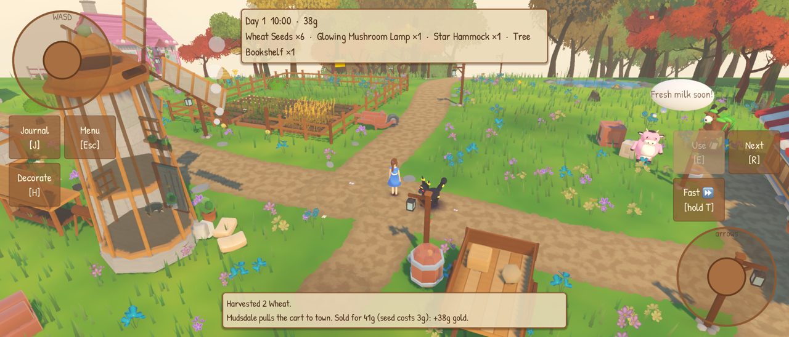
Pokémon doing the actual work
Miltank · Wooloo · Combee · Torchic · Gogoat · OinkologneEvery farm Pokémon makes something, idles, gets fed, repeats. Each one has its own morning greeting and a signature antic. My partner Umbreon follows me round, fetches things and runs workshop chores. Chloe's is Sylveon. Its rings glow brighter at night now, because I asked.
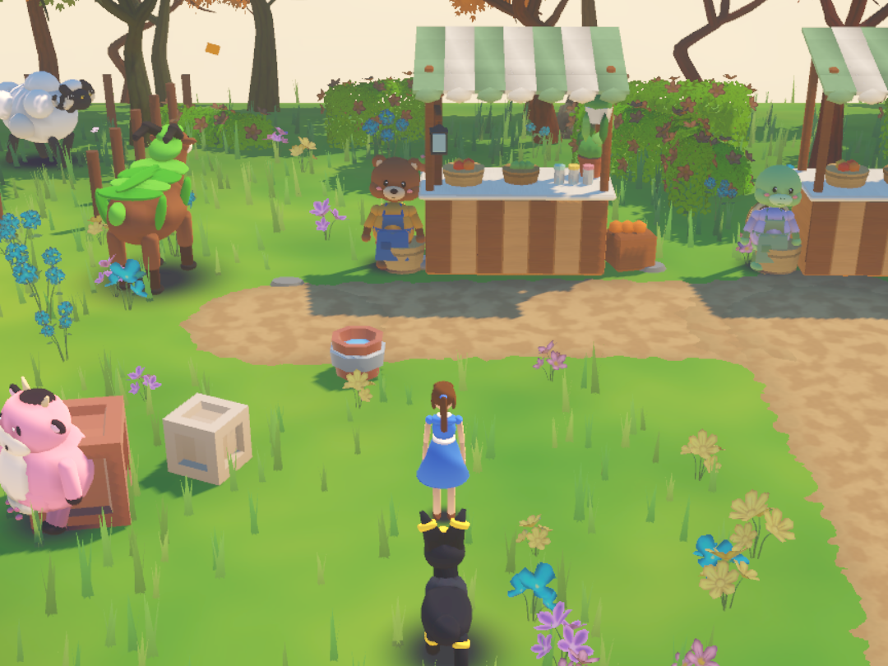
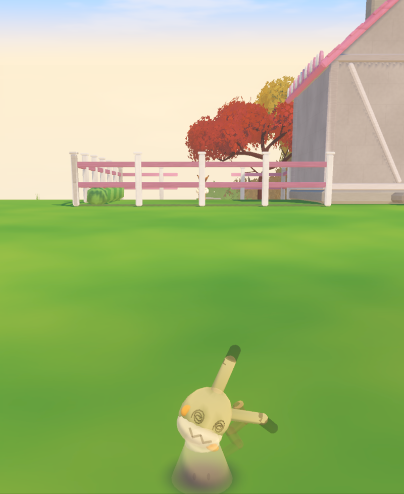
Shopkeepers that actually talk
Claude · panda (ramen) · turtle (tea) · bear (workshop)The shopkeepers are animal villagers. Type anything to them and Claude writes their reply, in character, with a mood attached, so they pull a face and do a little gesture to match. The ramen and tea stalls are proper shopfronts on the main street now, with the owners behind the counters.
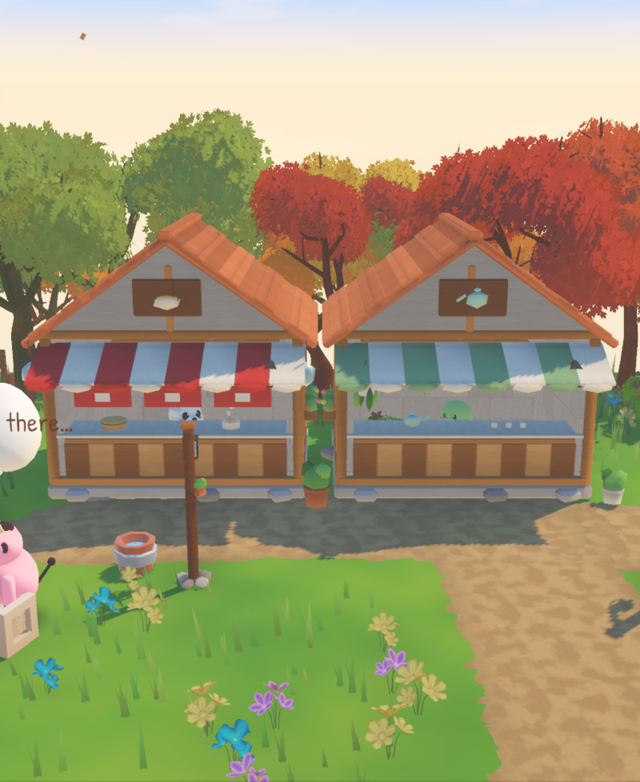

Houses (with FOUR rooms now)
decorate mode · lanterns · the mirrorEveryone has a house to decorate. It started as one room, then I asked for more space, so now there's a side room, a mirrored west room and a north room behind the back wall. In decorate mode the walls drop to half height so you can carry furniture from room to room. You can sit on the chairs and lie on the beds, and Umbreon comes inside and curls up in its pet bed. Each room has a lantern that lights up at night. The mirror changes your outfit, hair style and colours.
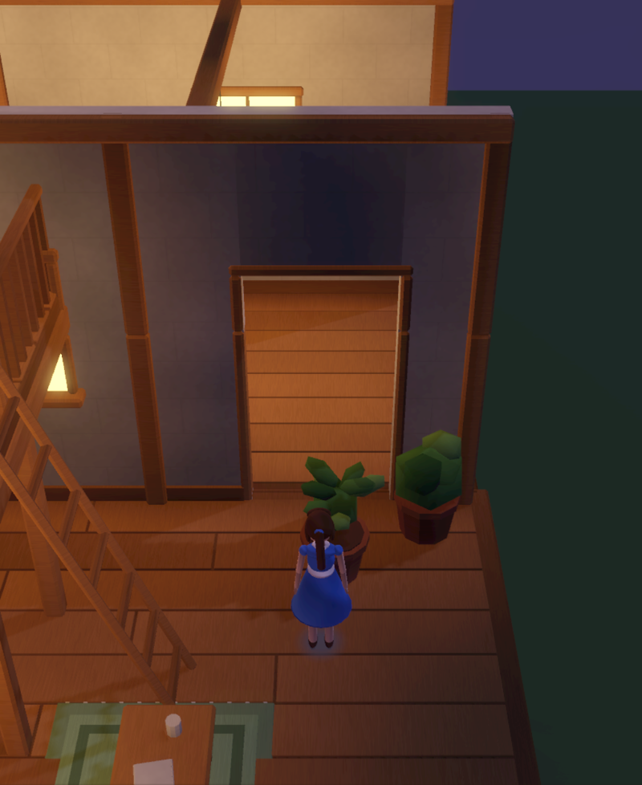
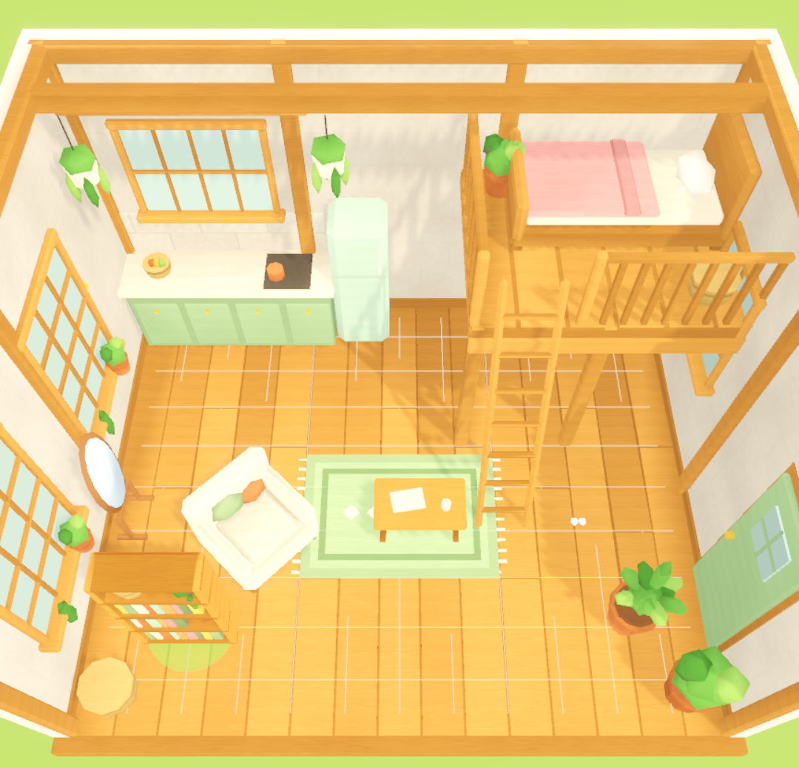
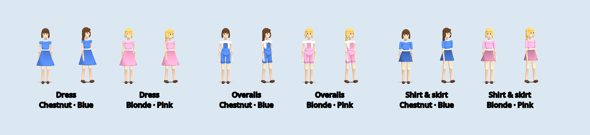
Real holidays, real story
Halloween · Christmas · Chinese New YearSeasons follow the real calendar. At Christmas the snow ramps in over three days, every shop gets lights, and Papa leaves a gift in each person's stocking. At Chinese New Year, Gracidea flowers bloom by the old glade path, and you can finally cook the Special Ramen from the old family recipe. Who it's for, I'm not saying. Play it.

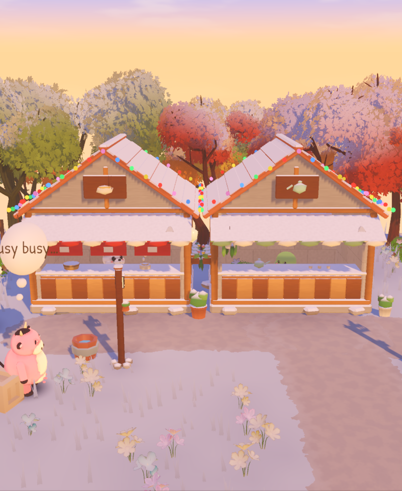
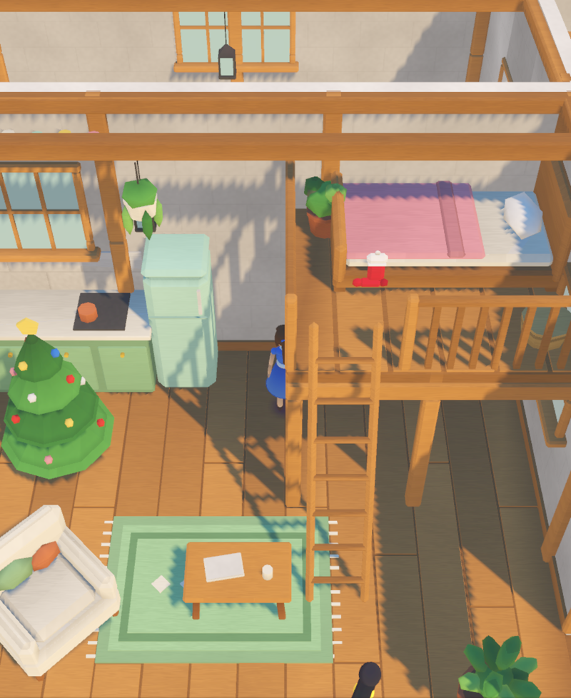
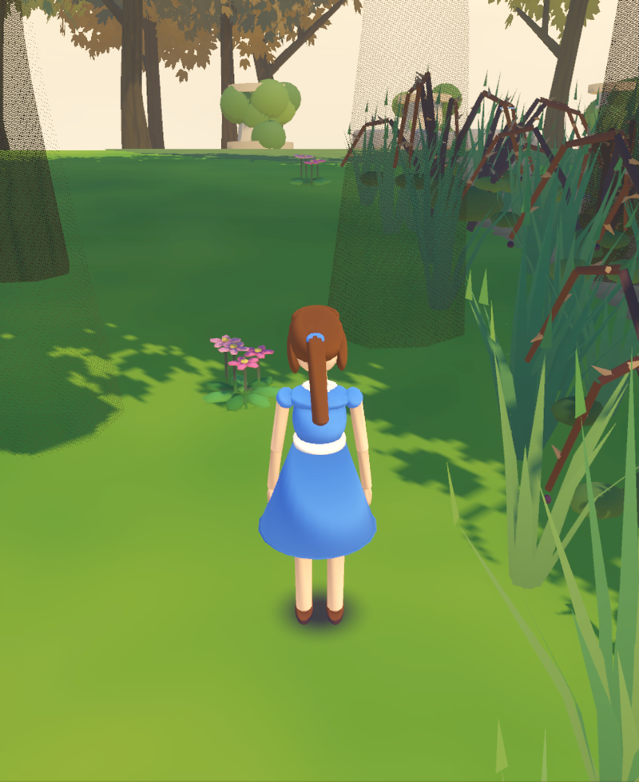
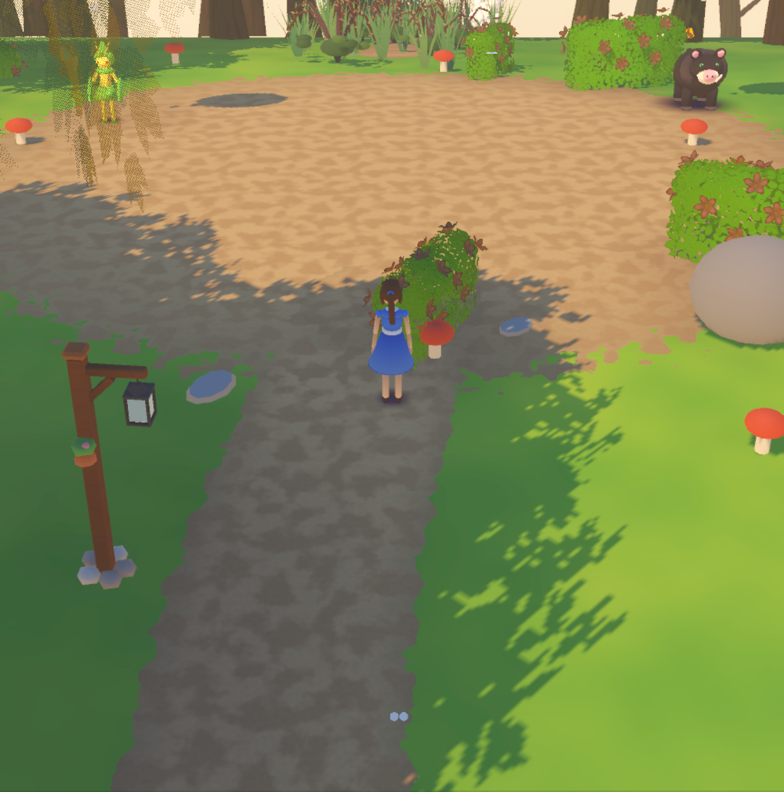